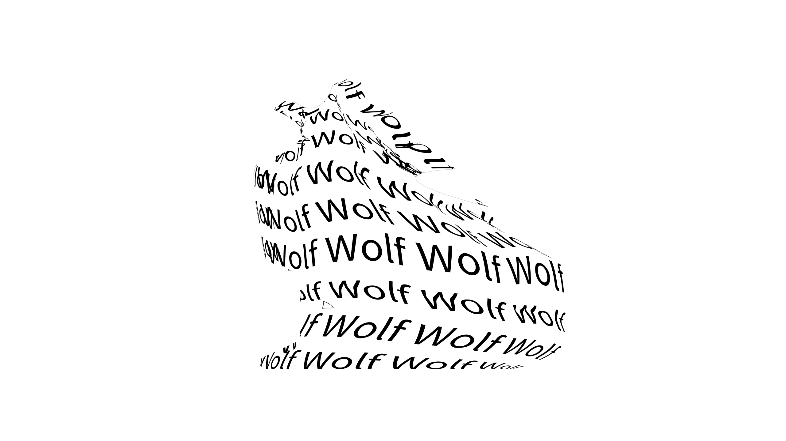

PNG Format Example

About This Image
For this project, we were required to make a calligram of an animal in Adobe Illustrator. The words needed to be morphed into an image of a animal using the distort tool.
Why PNG Format?
We used PNG for this file to have a transparent background. Since this image is made up of text, using the PNG format maintains the quality/readability of the text. While the background is transparent, some parts of image are mistakenly filled with white space.
Image source: Original photo by Jamal Kennard